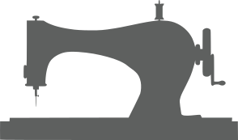

О нас
Наши филиалы
Ул. Профинтерна 10
Ул. Авиагородок 12
Услуги
Ремонт и подгонка
Индивидуальный пошив
Изделия из кожи
Изделия из меха
Изделия из любых тканей
Товары
Белье
Ткани
Фурнитура
Здесь еще пусто, но скоро что то появится